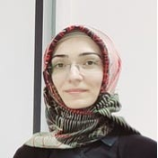

Adversarial and Robust Machine Learning
Adversarial attacks, robustness evaluation, distribution shift, and model reliability.
Assistant Professor · Turkish Air Force Academy (Hava Harp Okulu)
National Defence University (Milli Savunma Üniversitesi), Istanbul
My research interests include adversarial machine learning, speech and audio processing, and computer vision.

I am an Assistant Professor in the Department of Computer Engineering at the Turkish Air Force Academy, National Defence University, Istanbul, Türkiye.
My research interests include adversarial machine learning, speech and audio processing, and computer vision. My recent work has focused on the robustness of machine learning systems and the effects of annotation quality on computer vision models.
Adversarial attacks, robustness evaluation, distribution shift, and model reliability.
Speaker verification, synthetic speech detection, and robustness of speech-based systems.
Object detection, image analysis, remote sensing, and annotation quality.
Selected journal articles and conference papers.
Publication data could not be loaded. Please refer to the academic CV.
Courses taught at undergraduate and graduate levels include:
Thesis supervision includes synthetic speech detection, speaker representations and diarization, and applied machine learning.